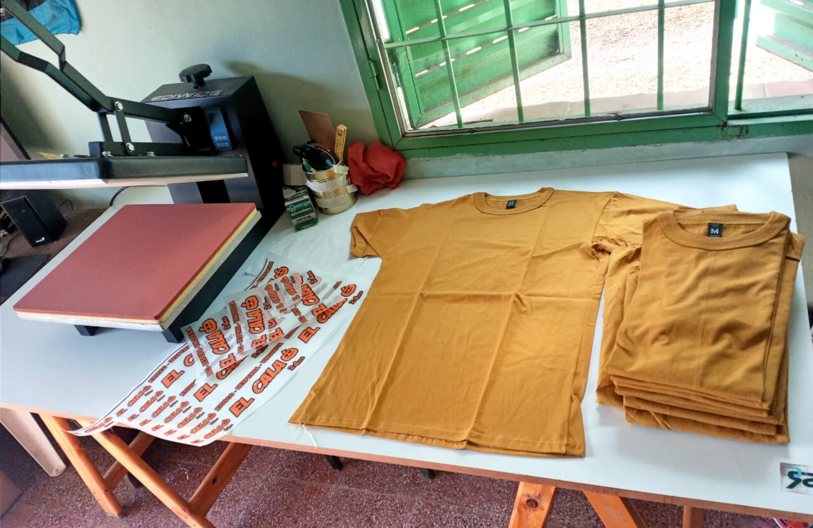

Información personal
Nombre：Ricardo Andres Llanes
Fecha de Nacimiento: 08/07/1986
Contacto：3512569979
Correo: andresllanes86@gmail.com
Estudia：UNC
(Escuela de Oficios)
Lugar de Nacimiento: Cordoba
Lenguaje de programación
HTML5 ［70%］
CSS3 ［50%］
Javascript［40%］
Python ［50%］
herramientas en desarrollo
Bootstrap ［60%］
Visual Estudio code［60%］
Estudiando
Javascript
Bootstrap
HTML5
CSS
Creacion de Bases de Datos
Creacion de programas
Intereses Personales
Familia
Viajar
Gimnasio
Sobre Mi
Soy Andrés, me considero una persona responsable y muy dedicado, tengo mucha experiencia para trabajar en equipo, sé seguir las indicaciones y responder con eficacia y rapidez cada tarea que me sea designada.
Formacion Academica
Estudié en el colegio Pedro Ignacio de Castro Barros
Especialidad en Contabilidad
Certificado de Secundario en mano
Idiomas
Ingles nivel A2
Español
Cursos que he realizado
Estudie Python en el instituto Instrumenta, dictado por la Municipalidad de Cordoba, En él aprendí las bases del lenguaje, variables, tablas, operadores y condicionales,operadores lógicos, listas, tuplas, librerias como Pandas y Numpy.
Estudie HTML, CSS y Javascript en la escuela de oficios que dicta la UNC(UNIVERSIDAD NACIONAL DE CORDOBA) ahi aprendi las bases de la maquetación, html5, CSS3, Javascript, bootstrap, web responsive, framework, hosting, scrum, kanban, git y github.
Proyectos realizados
Todos los proyectos fueron realizados durante el curso en la UNC, sigo trabajando y mejorando los proyectos.

Taller HOT ROD Juanfa
Primer proyecto donde aplicamos maquetacion html5, CSS, tablas, titulos, parrafos, colores, imagenes, enlaces internos y externos.
Ver Proyecto

Kaiser Indumentaria
Segundo proyecto realizado ampliando la maquetacion, estilos de fuente, backround colores, imagenes, enlaces, formularios y github.
Ver Proyecto
Dulzura Pasteleria Artesanal
trabajo grupal, aplicamos la división de tareas trabajando con github, card, paleta de colores, maquetación, bootstrap, Javascript.
Ver Proyecto